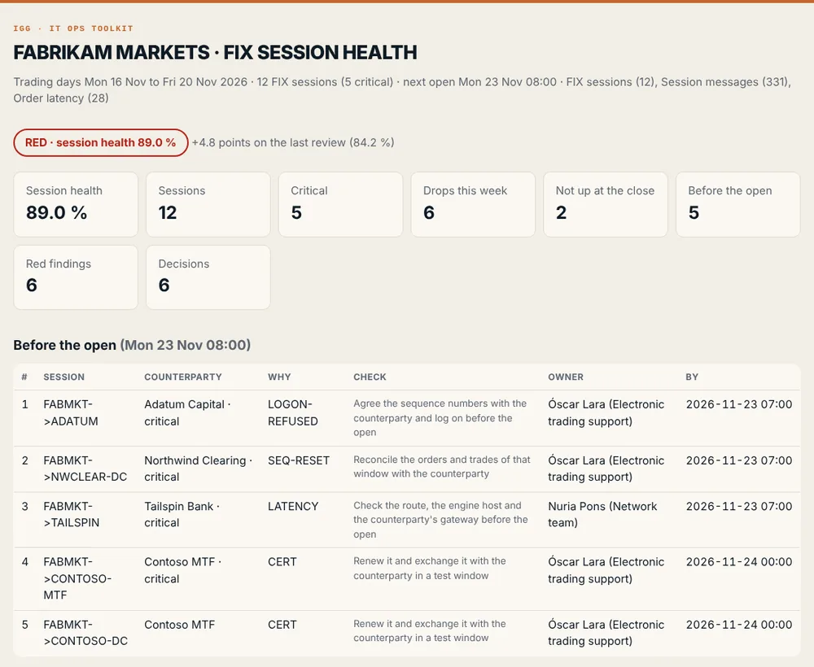

At 21:58 on Friday, an order session with Adatum Capital tried to log on again after a disconnect and was refused: "MsgSeqNum too low, expecting 4812 but received 1". Nobody would have looked at it until Monday's open. That is what the FIX session health review published with this post puts first on its list. It is an open-source project that runs on sample data from a fictional broker with its electronic trading desk in Madrid.
FIX is the protocol orders, executions and drop copies travel on between a broker and its counterparties. Every session leaves a log, and the review only needs the session-level messages in it: logons and logouts, test requests, resend requests, sequence resets and rejects. A read-only PowerShell script takes them from the engine logs; the review reads a week of them, session by session, against the desk's thresholds.
What can have been lost
On Wednesday at 14:12, Northwind Clearing's drop copy received a sequence reset without gap fill, from 18322 to 18450. Resend requests that are answered are normal; a reset like this means 128 messages were never resent, so the orders and trades of that window have to be reconciled before Monday. It is the second line of the watchlist.
What is unstable
Tailspin Bank's order session dropped five times without a logout, four of them in market hours, and needed six resends to recover. On Friday its order round trip went from about 4 ms to 38 ms at the 99th percentile. Litware's market data needed 14 test requests, almost all around the open, because its heartbeats stopped arriving. Relecloud's RFQ session has not logged on since Wednesday, Wingtip Prime rejected 22 allocations for an unknown account and Woodgrove logs on with a 60-second heartbeat when 30 is configured.
What will break on its own
The TLS certificate of the two Contoso MTF sessions expires on Thursday, and Proseware's failover to the backup gateway has never been tested.
The demo scores 89% session health, 4.8 points up on the last review, with six red and eight amber findings, five sessions on the watchlist before Monday at 08:00 and six decisions: check the watchlist an hour before the open, open cases with two counterparties, reconcile the reset, renew the certificates, book the failover test and fix the static data behind the rejects.
How to use it with real data
The script reads QuickFIX/J or QuickFIX/n style logs; the session list with its counterparty, purpose, heartbeat, hosts, failover test and certificate goes in a CSV, and the daily latency in another if the monitoring has it. Market hours, thresholds and latency limits are the desk's own policy in a settings file. It runs on Python with no external dependencies and produces a web report, a one-page pack for the desk and CSV files with every session, day, finding and action. The demo data is fictional: names, CompIDs, hosts and times.
Where it comes from
The tool comes from keeping trading floors connected: FIX and electronic trading connectivity with counterparties, LSEG and Bloomberg market data platforms, monitoring and major incident response, and network operations.
Want to bring it to your environment or adapt it to your case? Get in touch and we can look at it together.
Tech Career Lab · newsletter
Found this useful? Every two weeks I send one practical idea for IT professionals: LinkedIn, projects, networking and hiring processes.
Sign up and get the 33 ideas →